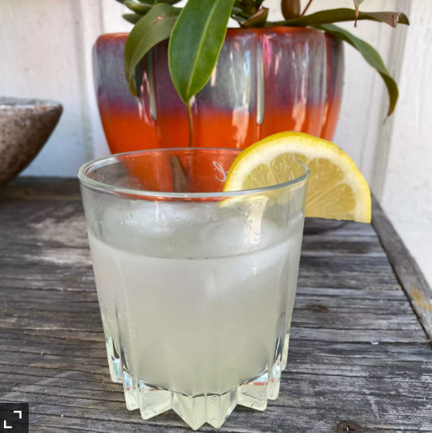

Sunflower_cocktail

Easy sunflower cocktail recipe using equal parts of each ingredient.
Ingredients/p>
- 2 (1.5 fluid ounce) jiggers gin (such as Aviation® or Hendrick's®)
- 2 (1.5 fluid ounce) jiggers orange-flavored liqueur (such as Cointreau®)
- 2 (1.5 fluid ounce) jiggers elderflower liqueur (such as St. Germain®)
- 2 (1.5 fluid ounce) jiggers lemon juice
- crushed ice
Steps
- Combine gin, orange-flavored liqueur, elderflower liqueur, and lemon juice with some crushed ice in a cocktail shaker. Cover and shake until the outside of the shaker has frosted.
- Strain into 2 glasses.